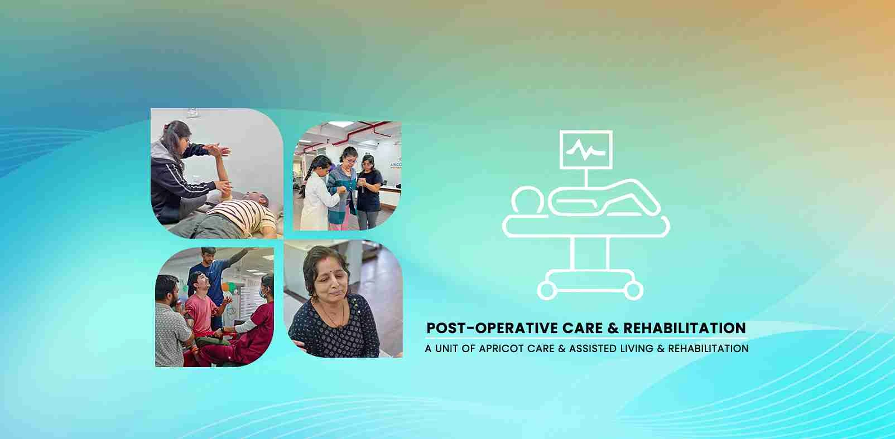

Comprehensive Spine Care and Rehabilitation in Pune


Expert Post-Operative Rehabilitation in Pune
The moment you leave the operating room, your recovery journey truly begins. While your surgeon has expertly corrected the underlying structural issue, the long-term success of your procedure is now determined by the quality, expertise, and dedication of your post-operative rehabilitation team.
Research has conclusively shown that patients who participate in a structured, post-operative physiotherapy program demonstrate up to a 50% faster recovery in strength and function compared to those who attempt to recover on their own.
Failing to engage in a structured, professional rehab program can lead to complications like chronic pain, severe stiffness, muscle weakness, and a compromised surgical outcome. At Apricot Care Assisted Living and Rehabilitation in Pune, we serve as your surgeon's essential partner. Our mission is to protect your surgical investment and guide you through a safe, efficient, and complete recovery.
Our team of specialist Physiotherapists provides meticulous, one-on-one care, following your surgeon's specific protocol to the letter. We are dedicated to managing your pain, restoring your function, and helping you return to the life you love, faster, safer, and with total confidence in your body.
Our Post-Operative Program Is Designed To:
- Ensure a safe and successful outcome from your surgical procedure.
- Effectively manage post-surgical pain and swelling
- Safely restore your full range of motion, strength, and flexibility.
- Prevent the development of scar tissue, stiffness, and other complications
- Accelerate your healing process so you can return to your life sooner.

Your Path to a Pain-Free Spine in 3 Simple Steps
We make it easy to start your journey towards lasting relief. Our process is clear, collaborative, and focused on you.
- Book Your Detailed Spine Assessment: Schedule a one-on-one consultation with our spine care specialists in Pune.
- Receive Your Customised Treatment Plan: We diagnose the root cause of your pain and design a targeted, non-surgical therapy plan.
- Begin Your Recovery & Build Strength: Engage in your personalized therapy program, supported by our expert team as you heal and grow stronger.
We Specialize in Rehabilitation For All Major Surgeries
Our Physiotherapists in Pune have deep, protocol-based expertise in providing post-operative care for a wide range of procedures.
We focus meticulously on regaining full knee extension and flexion, controlling swelling, and rebuilding quadriceps strength to give you a stable, pain-free knee for life.
Our team guides you through all surgeon-specific precautions (e.g., avoiding certain movements), restoring a normal walking pattern, and strengthening the crucial hip muscles for long-term stability and confidence.
We manage this delicate recovery with a phased protocol designed to protect the new ligament graft while systematically restoring full motion, strength, and agility for a safe return to sport.
Our gentle, progressive approach protects the delicate surgical repair while restoring pain-free motion and the functional strength needed for daily life.
The key to a successful spine surgery outcome is learning how to move safely. We teach you core stabilization, proper body mechanics, and how to avoid undue stress on your back. For more, see our Spine Care Page.
We are experts in guiding you through the crucial phases of progressive, safe weight-bearing, restoring motion, and regaining the full strength of the injured limb.
We provide structured Phase 2 Cardiac Rehabilitation, focusing on safe cardiovascular conditioning, endurance building, and lifestyle modification under close supervision.
Our specialized care can help manage post-surgical pain, improve shoulder and chest wall mobility, and address or prevent complications like lymphedema. Learn more on our Oncology Care Page.

Our Approach: A Phased Journey to Your Full Recovery
Every recovery is personal, but it must follow a structured, evidence-based path. Our Physiotherapists guide you meticulously through each of these four distinct phases.
The Protective Phase (Immediately Post-Op)
This initial phase is all about protecting the surgical repair and managing your body's natural response to the procedure.
Our Focus: We prioritize controlling your pain and swelling using cryotherapy, compression, and elevation. We educate you on safe positions and movements. Your therapist will use gentle passive or active-assisted motion to prevent your joint from getting stiff, without stressing the new repair. We also ensure you are safe and confident using any assistive devices like crutches or a walker.

The Mobility & Activation Phase
As the initial healing progresses and with your surgeon's approval, the focus shifts to actively restoring your movement and re-engaging your muscles.
Our Focus: You will begin to move the joint through its full range of motion under your own power (active range of motion). Your therapist will use hands-on manual therapy techniques to mobilize the joint and manage any scar tissue formation. We introduce gentle muscle activation exercises to "wake up" the muscles that have been dormant.
The Strengthening & Functional Phase
This is where you build the solid foundation of strength needed to support your new joint or repair for a lifetime. This phase is crucial for preventing re-injury.
Our Focus: We design a program of progressive resistive exercises, using bands, weights, and your own bodyweight to build robust muscle strength in both the primary and supporting muscles. We then translate that strength into real-world, functional movements like squatting, lunging, and climbing stairs, all with perfect form. Balance and proprioceptive drills are heavily emphasized to retrain your joint awareness.
The Return to Life & Sport Phase
The final phase is about bridging the gap between being "recovered" and returning to every aspect of your life with total, unwavering confidence.
Our Focus: We tailor this phase to your personal goals. For athletes, this involves advanced techniques like plyometrics (jumping, landing) and sport-specific drills. For others, it might mean ensuring you can comfortably lift your grandchildren or walk for an hour without pain. We provide you with a long-term fitness and maintenance program to ensure your results last a lifetime.

our service
Our Comprehensive Care and Support Services
.webp)
.webp)
-(1).webp)
24/7 Nursing and Medical Supervision
At Apricot Care Assisted Living and Rehabilitation, we provide 24/7 nursing support to ensure that you receive continuous care and medical monitoring. Whether you're staying in our facility or recovering at home, our trained nurses and medical staff are always available to address your needs, ensuring a safe and secure environment throughout your recovery journey.
.webp)
.webp)
.webp)
.webp)
.webp)
.webp)
.webp)
.webp)
.webp)
.webp)
.webp)
.webp)
Why Apricot Care Assisted Living and Rehabilitation is Pune's Trusted Choice for Post-Operative Care
Protocol-Driven & Surgeon-Approved
Your recovery is our shared priority. We maintain open communication with your surgeon's office to ensure our plan strictly adheres to their specific recommendations and protocols for your procedure.
Dedicated One-on-One Sessions
You receive the full, undivided attention of your specialist therapist for every minute of your appointment. This ensures your safety, perfects your exercise form, and allows for constant, expert adjustments to your plan. This is a level of care that high-volume centers simply cannot match.
Advanced Pain & Swelling Management
We utilize a range of advanced techniques and modalities to keep you as comfortable as possible, which allows you to participate more fully in your rehabilitation and heal faster.
A Focus on Education & Empowerment
We don't just treat you; we teach you. You will understand your surgery, the healing process, and what you need to do to ensure a successful outcome. We empower you to be an active and knowledgeable participant in your own recovery.